Define the system Reference Documentation
The SysML standard is used for modeling heterogeneous systems (mechanic, electronic, software).
The UML standard is used for modeling business processes and for analysing and designing software applications.
Following we are describing the key functions provided by UML/SysML Designer to its different users. To describe the features available in UML/SyML Designer, we are detailing the process followed by Alfred to define an heterogeneous system. First, he defines its system by writing the different requirements and from that he describes the system structure. Then, he refines the structure by defining the internal structure of each part of the system. When he finishes, Alfred gives the system description to the software architects in order that they specified the application. For specifying the software parts, the UML standard is used by John to define a software application, by Bob to implement the application, by Kevin to document it and finally by Alice to get an overview of a build application.
Alfred uses SysML to describe its system.
Manage SysML/UML projects
To start, Alfred has to create a new SysML project.
As SysML Designer is based on UML Designer, a SysML project is also a UML project.
John also uses UML to describe its application. In UML Designer, a UML project is a Modeling project used to organize and manage the models and their representations (diagrams, tables, etc.).
Modeling projects are responsible for storing the representation data (diagrams, tables, etc.) in special representation files with the extension .aird.
Modeling perspective
UML Designer is integrated into Eclipse and provides the default views and editors generated by Sirius.
The Modeling perspective provides all the required views, wizards and menus provided by UML Designer.
The Modeling perspective provides the following views by default:

- The Model Explorer : is an explorer view which is the main UI to interact with the models.
- The Outline : provides a structural overview of the document or model currently opened. For diagrams, it shows a miniature view of the whole diagram on which the user can easily navigate to other parts of the diagram for large ones.
- The Properties view gives detailed information about the currently selected element.
- The Problems view contains information markers of different severities (information only, warnings, or errors). This is where the user will find validation errors on the models for example.
Model Explorer
The Model Explorer view shows all the projects in the workspace and the files they contain. It adds some special capabilities to Modeling Projects, to allow the user to view and manipulate the semantic models and their graphical representations directly inside the explorer :
- Link with Editor : The Model Explorer supports the Link with Editor feature, which can be enabled by pressing the icon in the top right corner of the view (the one with two horizontal arrows). When this mode is enabled, if the user has a representation opened, clicking anywhere on it will automatically select the corresponding representation inside the Model Explorer (expanding the project and files if necessary). Conversely, if he selects a semantic element from one of the semantic models in the Model Explorer view and if this element is represented somewhere on the opened editor, it will be automatically selected.
- Filter elements : The Model Explorer also supports filtering of elements: if the user enters some text in the search box at the top of the view, the view will filter out all the elements which do not match the text. It is possible to use the * and ? special characters in the search string to mean respectively «any text» (including none) and «any single character».
Diagram editor
When a diagram is opened by the user, it opens in the diagram editor.

This editor is divided in three areas :
- the palette, which gives access to additional tools (for example creation tools to add new elements to the diagram);
- the main graphical area, which shows the elements and supports direct interaction with them;
- the tabbar, at the top of the graphical area, which provides additional, more global operations.
Palette
All diagrams have a palette of tools, which by default is docked on the right hand side of the main graphical area. The top row of the palette contains some general tools which are available on all diagrams, while the rest contains tools specific to each graphical modeler.
By default, the palette appears with a pre-defined size on the right hand side of the diagram.
These actions are available on the palette:
- Resizing: The user can resize it to take more or less horizontal space by dragging the vertical separator between the palette and the diagram with his mouse.
- Folding: The user can also fold the palette to hide it almost completely by clicking on the triangular icon in the corner of the palette header. When folded, he can restore it by clicking again on the same triangular icon. He can also keep it folded except when needed: when it is folded, a single click in the vertical folded area will reveal the palette temporarily so that you can select a tool. It will automatically hide again if he selects a tool or clicks elsewhere.
- Moving: If the user prefer, he can move the palette to the left side of the diagram editor by dragging the palette’s header with the mouse, or right-clicking on the header and choosing Dock On → Left or Dock On → Right.
A few general tools are available in standard on all diagrams. They appear in the top row of the palette, just below the header:
- Selection: The selection tool is the default one initially selected when a diagram is opened. To select an element on a diagram while this tool is active, simply click on it. To select several elements at the same time, the user can either draw a rectangle on the diagram (all the elements completely contained in the rectangle will get selected), or click on each element individually while keeping the Ctrl key pressed. When selecting elements which are already selected using this method, by clicking on them or drawing a rectangle around them, they are removed from the selection. The user can combine both methods (de/selection by single click or by zone) to build complex selection incrementally by always keeping the Ctrl key pressed. Selected elements have an outline and anchors drawn on their border. Note that when a selection contains multiple elements, exactly one of them has black selection anchors; the rest have white anchors. The element with the black anchors is called the primary selection, and some tools treat it differently than the others (for example alignment tools).
- Zoom: Next in the palette come two buttons to control the zoom level of the main diagram area. When the Zoom in (resp. Zoom out) button is active, clicking anywhere on the diagram will increment (resp. decrement) the zoom level by 25%. The current zoom level is visible in the tabbar when no diagram element is selected (see the section on the tabbar buttons for more ways to control the zoom level).
- Notes and note attachments: All diagrams support the creation of notes and text elements, which can be attached to diagram elements. These elements are purely graphical annotations, and have no effect on the semantic model. The three tools used to create them are available in a combo-box in the palette’s top row. By default, the Note tool (represented by a yellow sticky note) is selected. If the user clicks on the small arrow next to the sticky note, a menu appears where he can select which of the three tools to enable: Note, Text or Note attachment.
- Notes and Text elements: Are created in a similar way: either a single click somewhere on the diagram (which creates an element with a default size), or a click-drag to create the element with a custom initial size. Once created, one can edit the text inside the note or text zone usual the standard «direct edit» behavior ( F2, a slow double click, or by directly starting to enter alpha-numeric text). The only difference between notes and text zones is the visual presentation; notes have a yellow background (by default) and a border which represents a sticky not with a folded top-right corner.
- Note attachments: Can be created to link either notes or text zone to diagram elements (including other notes and text attachments). To create an attachment, activate the tool and then click once on the source element and once on the target element. The user can also click and drag from the source to the target elements.
- Pin/Unpin: The final standard tools which are available in the top row of all the palette allow to mark or unmark diagram elements as pinned. Pinning an element on the diagram means that when an automatic layout of the diagram is requested (see the Arrange All action), the element will not be moved or resized: it will stay at the exact same position as you placed it. Pinned element can still be moved manually. To pin or unpin an element, simply select the appropriate tool (using the arrow right next to the icon to make the menu appear), and when the tool is active, click on the element to mark as pinned or un-pinned.
Editor tab-bar
The editor is composed by a tab-bar and a main graphical area.
The tab-bar provides the following tools :
Selection tools
The tab-bar contains tools to select groups of diagram elements in a single operation :
- Select All: This is the default operation and will select all the elements visible on the diagram. It is also available via the Ctrl+A keyboard shortcut.
- Select All Connectors: This action will select all connectors (aka edges) between diagram elements which are visible on the diagram, and only them.
- Select All Shapes: This action will select all diagram elements which are not connectors/edges which are visible on the diagram.
Refresh
This operation, which can also be invoked with the F5 keyboard shortcut, will force an update of the diagram’s content according to the latest version of the underlying semantic model. The default operational mode for UML Designer is to automatically refresh the diagram’s content whenever any relevant change is detected in the semantic model. This can be disabled using the Automatic Refresh preference (see Window → Preferences → Viewpoint). When in manual refresh mode (i.e. Automatic Refresh is unchecked), the user must manually use the Refresh operation whenever he wants the diagram to take into account changes in the model. Even in automatic refresh mode, it may be sometimes necessary to invoke an explicit, manual refresh using this operation if UML Designer got confused.
Layouting diagrams
- Layouting mode : can be activated from the diagram toolbar, to allow the user to protect the semantic model while reorganizing a diagram. It avoids unfortunately changing properties or links related to model elements present on the diagram.
- Automatic Layout Tools (Arrange All / Arrange Linked Bordered Nodes) : Automatic layout uses a generic algorithm which tries to arrange the position and sizes of the elements on the diagram in a nice, readable way. In particular it makes sure, unless specific constraints pervent it, that no elements overlap each other, and that elements which contain others (i.e. containers) are large enough to show all their contents. It also tries to minimize the crossing of edges.
- Alignment Control: This menu contains several operations (Auto size, Make height and width same size…) which can be used to align several graphical elements in various ways. The actions in this menu are only enabled when several elements are selected.
- Pin/Unpin : It is possible to mark specific elements in a diagram as having a fixed location so that they are not moved by the Arrange All action. Diagram element pinning allows the user to combine both methods: manually arranging the position and size of elements when it is important while still being able to call Arrange All for the rest, without the risk of destroying the manual layouts.
- Copy/Paste of layout : It is possible to duplicate layout of diagram elements, that is to say to replicate mutual organization of diagram elements from one diagram to another. This replication only applies to the same semantic elements between diagrams.
Style customizations
The style of each diagram elements can be customized. This customization can be applied from the tool bar, from the «Style» and «Appearance» tab of the property view, from the «Diagram» menu or from the contextual menu Format. Theses customizations can be reset by the «Reset style customization» button available in the «Appearance» tab of the property view and in the diagram editor tool bar.
The user can customize :
- in container style : the background color, the background style, the border size, the foreground color, the label alignment, the label size and the label format.
- in node style : the border size, the color, the label alignment, format, position and size.
- in edge style : the folding style, the color, the label alignment, format, position and size, the line and routing style, the size and the target and source arrow.
Rulers and Grid
Finally, the Rulers And Grid page (see below) contains preferences to control whether or not new diagrams should initialy show the rulers and/or grids, and whether to enable the Snap to grid and Snap to shapes behavior by default. The preferences on this page are only taken into account as starting values for new diagrams. Each diagram has its own configuration of rulers and grid which can be modified in the Rulers & Grid section of the Properties view of the diagram itself.
Show/Hide
- Elements : When there is no selected element on the diagram, the tab-bar provides the button Show/Hide. This button opens a dialog to manage the shown and hidden elements on the diagram with a tree view, using various selection buttons (Check all, Uncheck all, Expand All and Collapse all) and various filters (All element, only checked elements and only unchecked elements). The user can also use regular expressions to easily retrieve the elements he wants to hide/reveal. It is possible to :
- Hide element from diagram : Every graphical element on a diagram can be hidden explicitly. To do that, simply right click on the graphical element (or elements if the user wants to hide several elements at once) that must be hidden. Then, choose Show/Hide→Hide Element. The graphical element is now hidden from view. The icon in the tool-bar changes showing a «check box» on it as soon as at least one element has been hidden, to remind the user that what he see is not a complete view of the model being represented.
- Hide element from the outline : It is also possible to hide an element from the outline view. Choose outline mode to see the semantic model in a tree viewer. The user can now right click on an element and choose Hide element. There are two ways to reveal hidden elements:
- On the outline view, in outline mode, he can see every model element. The elements that are hidden have their names displayed in italic style. To reveal one of this element, simply right click on it and choose Show element.
- Show/Hide elements using a tree viewer
- Labels : The approach is the same as for other elements, except that there are a specific menus named «Hide/Show Label». It is possible to call this menu directly on the label or on its graphical element. So it is also possible to hide the label for :
- Node : when the node label is on the border of its node
- Edge : note that if a label of an edge is hidden (center, begin or end), all the labels of the edge will be hidden. Same behavior for the reveal action, if a label of an edge is revealed (center, begin or end), all the labels of the edge will be revealed.
- Icons: When working on big diagrams, the user may want to hide the icons of the labels on all shapes or connectors, in order to improve the readability of the representations. To do so, open the Eclipse Preferences ( Window/ Preferences), and select the «Appearance» category ( Viewpoint/ Viewpoint Diagram/ Appearance). The options “Hide label icons on shapes” and “Hide label icons on connectors” will allow him to do so. By default, no shapes neither connectors are hidden.
Delete element
From diagram
This action removes the selected graphical element from the diagram, but does not delete the corresponding semantic elements.
From model
This action removes both the selected graphical element and the corresponding semantic elements. This tool deletes the semantic element. If a representation is open, the view corresponding to the deleted element is not anymore visible after the delete action.
It is possible to delete a semantic element :
- from the diagrams by using :
- Ctrl+D on keyboard,
- the context menu action ‘Delete from model’,
- the toolbar action ‘Delete from model’ :
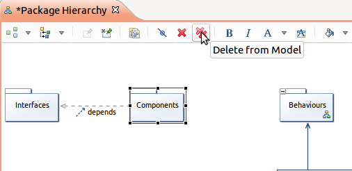
- from the model explorer by using the context menu action ‘Delete’ :

Editor main graphical area
Direct edit
In the main graphical area, the user can edit the text inside an element by using the standard direct edit behavior. To activate the direct edit, the user selects an element and :
- press F2,
- or do a slow double click,
- or directly starting to enter alpha-numeric text.
Tooltip
Another feature available on the editor is the tooltip tool which are kind of shortcuts for palette tools :

When the user goes over the main graphical area with his mouse, after a short delay the tools usable according to the current context are poped up. Then the user can select a tool, the tool behaviour will be exactly the same as if he would have select the same tool in the palette.
As UML Designer is based on Sirius, the diagram editor shows the graphical elements according to the style defined in the viewpoint specification (uml.odesign).
Outline
The outline view has two display modes that the user can select in its upper toolbar:
- In Outline mode, it shows the model elements represented in the diagram as a tree view;
- In Overview mode, it shows a complete overview of the active diagram. If the diagram is too big to be seen entirely on the diagram modeler, the overview is an easy way to navigate on the active diagram.
Properties view
In the properties view, the user finds several tabs which will not be the same if an element is selected on the diagram or not.
If an element is selected on the diagram, he has on the properties view the following generic tabs:
- General : contains a set of the most used properties;
- Stereotypes : shows the stereotypes applied on the selected element;
- Relationships : shows the relations of the selected element;
- Documentation : shows the comment associated to the UML element;
- Semantic : This tab shows the properties of the semantic element selected. You will find the same informations as in the properties view of an Ecore editor.
- Style : This tab presents the properties about the graphical representation of the element. You will find informations like label size and format, shape of the graphical object, background and foreground colors…
- Appearance : This tab allows to choose the style and size of text fields contained by the element.
For a selected element specific tabs are visible depending on the element type : Attributes, Operations, Ends, Literals, Profiles, Body, Parameters…
If the user does not select an element, he has in the properties view the properties of the diagram itself :
- Semantic : The diagram has a semantic element which is the element on which we have created the diagram in the Model Content view. The content is the same as presented previously.
- Filters : You can apply filters on your diagram. Filters will be presented in a following part.
- Documentation : This tab provides a text area for the current diagram documentation.
- Rulers & Grid : Allow the user to display vertical and horizontal rulers and also a grid on the diagram. He can choose how is displayed the grid (Solid style, Dash style, Dot style…).
- Appearance : This tab allows to choose the style and size of text fields of every elements of diagram which have not been specifically set on the Representation Diagram.
Create a project
Alfred starts by creating a new SysML project. From the Modeling perspective, he creates a new SysML project through the Eclipse main menus (File→New→SysML Project) or from the toolbar (New→SysML Project).
John starts by creating a new UML project. From the Modeling perspective, he creates a new UML project through the Eclipse main menus (File→New→UML Project) or from the toolbar (New→UML Project).
In each case a wizard opens, asking for a mandatory project name. Entering an invalid project name will result in an error message. By default, the modeling project will be created in the workspace’s location, but this can be changed: just uncheck «Use default location» and enter the path to the location where you want your modeling project to be created.
This action creates automatically a new UML project with :
- a UML model xxx.uml = contains all the model elements, based on the standard UML2 which is the EMF-implementation of the UML2.x metamodel for the Eclipse platform.
- a representation file representation.aird = stores all the graphical information
In the case of SysML project, the SysML profile is applied by default on the newly created UML model.
Other actions on a project
As for any other kind of project in Eclipse, the following actions exist on a UML project:
- Delete
- Rename
- Import
- Open
- Close
These actions are available from the Eclipse File menu or from the Model Explorer with a popup menu.
Manage viewpoints
The viewpoints are defined according to the representation separation defined by the UML standard. In UML, the diagrams are separated into two categories :
- structural diagrams
- behavioural diagrams
The UML Structural Modeling viewpoint is used by the users who are focused on system structures. For users interested in the modelization of behaviours, they have to activate the UML Behavioural Modeling viewpoints. These two viewpoints contain only standard UML representations.
A third viewpoint is defined to contain non standard representations.
Each UML project provides three viewpoints :
- UML Structural Modeling : enables all the structural diagrams
- Class diagram
- Package hierarchy
- Component diagram
- Composite structure diagram
- Deployment diagram
- Object diagram
- UML Behavioural Modeling : enables all the behavioral diagrams
- Use case diagram
- Sequence diagram
- Statemachine diagram
- Activity diagram
- UML Extensions : enables non standard representations
- Documentation table
- Package containment
- UseCase/Element matrix
This controls what kind of representations can be created on the semantic models inside the project. The set of viewpoints which are available to the user depends on what plug-ins are installed, and on the type of semantic models which are inside the modeling projects. For example, even if the user has installed the UML Designer, he will only be able to enable to corresponding viewpoints if the project contains UML models (.uml files).
To select which viewpoints are enable on a project, he simply uses the Viewpoint Selection action in the context menu of the project itself. A dialog box opens which shows all the viewpoints which are compatible with the project (depending on the kind of models it contains). The user can check or un-check each viewpoint individually to enable or disable it, and clicks OK to validate his choice.
Another viewpoint is created to contain all the SysML specific representations.
Each SysML project provides the following viewpoints :
- SysML : provides all the SysML diagrams
- UML Designer viewpoints
Manage representations
In UML Designer, the user manages representations. A representation is a diagram (class diagram, use case diagram…) or a table/cross-table (as in SysML Designer the requirements table).
It is possible for the user to :
- Create a representation
- Delete a representation
- Rename a representation
- Open a representation
- Copy a representation
- In the Model Explorer view, find the semantic element for which the user wants to create a diagram on, and in the context menu (available with a right click), selects the New representation… sub-menu. It gives a list of all the representations which can be created on this object. Just select the type of diagram wanted, and enter the name of the new diagram in the dialog box which appears then. The newly created diagram will automatically open.
- In the Model Explorer view, right-click on the UML Project which contains the semantic element to represent and select Create Representation. In the wizard which appears, first select the type of diagram to create (if diagrams are available), and in the next page, select the semantic element to create it on. Only the semantic elements which are compatible with the selected diagram type will be available. Just select the element that must be represented, finish the wizard, and enter the name of the new diagram in the dialog box which appears then. The newly created diagram will automatically open.
- Finally, on some representations, it may be possible to create new diagrams directly from the context menu of the element on which the user wants to create the diagram. If this is possible, it will be available in the Navigate category of the element’s context menu. Once again, after selecting the type of diagram to create, enter the name of the new diagram in the dialog box which appears. The newly created diagram will automatically open.
Create new representation action is available according to the following matrix :
| Element/Diagram | UseCase | Package | Class | Component | Object | Composite | Deployment | Sequence | Activity | Statemachine |
|---|---|---|---|---|---|---|---|---|---|---|
| Model | x | x | x | x | x | x | x | |||
| Package | x | x | x | x | x | x | x | |||
| Component | x | |||||||||
| Class | x | |||||||||
| Device | x | |||||||||
| Execution Env | x | |||||||||
| Node | x | x | ||||||||
| Activity | x | x | ||||||||
| Statemachine | x | x | ||||||||
| Interaction | x | x |
Example : When a Class is selected in a diagram or the model explorer, it is possible to create :
- another Class diagram
- a Component diagram
- a Composite structure diagram
- an Activity diagram
- a Statemachine diagram
Note that the set of diagrams the user can create will depend both on the type of the selected element and on the set of viewpoints which are currently enabled.
In SysML Designer, the Create new representation action is available according to the following matrix :
| Element/Diagram | Block | InternalBlock | Parametric | Requirement |
|---|---|---|---|---|
| Package | x | x | x | x |
| Block | x | x | x | |
| ConstraintBlock | x | x | x |
Manage UML models
A UML project can contain multiple UML models.
The user can :
- Create a new UML model from the Eclipse menus (File→New→UML model) or from the toolbar (New→UML model).
- Delete a UML model : From the Model Explorer view rigth-clicks on the UML file to remove and select Delete.
- Manage referenced models :
- Reference an existing UML model from the Project Dependencies in the Model Explorer view. A modeling project has always an element called Project Dependencies available. This is used to import external models, which are stored outside of the modeling project but used in it. To use a semantic model stored outside of the current modeling project, it must be added to the project dependencies. That does not change its location but simply allows access to its content. To add an external model to a modeling project, right-click on Project Dependencies then select Add Model. A wizard page opens, allowing the user to enter the URI of the model to add. If the model is in the workspace, the Browse Workspace button can be used to look for it. If the model is in the file system, the Browse File System button must be used to find it. Otherwise, the user must enter the model’s URI manually. Project dependencies can contain both semantic models and graphical models ( i.e. representations files).
- Remove a referenced model : Referenced models can be removed if they are not used, just right-click on the model in the Model Dependencies and select Remove. This action does not delete the model itself but only the reference to it.
Define the requirements
The first step for Alfred is to capture all the requirements for the system do defined. The SysML standard provides a new kind of diagram : the requirement diagram.
This diagram is used to capture functional, performance, and interface requirements.

The requirement diagram is an unsynchronized diagram which means that the user has to explicitly add existing elements on the diagram to see them.
A second kind of representation is available for representing the requirements : the requirement table.

Manage requirements
It is possible to create requirements by selecting the creation tools from the palette and then clicking on the diagram or an element.
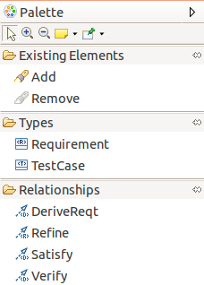
A diagram is associated to a package and when the user click on the diagram background the element is created under the corresponding package in the UML model.
If the user selects a container, the element will be created under the corresponding semantic element in the UML model.
Tooltip tools are also available to create any kind of elements.
Creation tools are available in the requirement diagram for the following types :
| Element | Representation | Comments |
|---|---|---|
| Requirement | 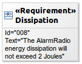 | A requirement in natural language |
| SubRequirement |  |
A requirement contained in another requirement |
| TestCase |  |
A test case that should verify a requirement |
A requirement is composed by :
- an identifier : string which represents the unique identifier of a requirement;
- a text : textual description.
In the requirement table, creation tools are provided in :
- the tool bar :

- a pop up menu :

The user can also delete a requirement or a test case (see Diagram editor/Editor tab-bar/Delete element/from model).
Manage requirement relationships
It is possible to create a relationship by selecting the edge creation tool from the palette and then clicking on a source element and a target element.
The following edge creation tools exist in the palette :
|. Element |_. Representation |. Comments |
|DeriveReqt | |Source requirement derives target requirement|
|Source requirement derives target requirement|
|Refine | |Source requirement refines target requirement|
|Source requirement refines target requirement|
|Satisfy | |Block satisfies a requirement |
|Block satisfies a requirement |
|Verify | |Test case verifies requirement |
|Test case verifies requirement |
The user can also delete a relationship (see Diagram editor/Editor tab-bar/Delete element/from model).
And finally, he can reconnect relationships. It is possible to reconnect the source and the target of any kind of edge in the requirement diagram :
- sub requirement
- derive requirement
- refine
- satisfy
- verify
Manage existing requirement elements
As the diagram is unsynchronized, the user needs to add manually the elements already existing in the semantic model that should appear on the representation.
It is possible to add existing elements by :
- selecting the add tool from the palette or the tooltip and then clicking on the diagram or an element. The add tool opens a selection wizard.
- drag and droping an element from the model explorer.
The following elements can be added on a requirement diagram :
- requirement
- block
- use case
- test case
- package
- subject
The user can see that an element is not coming from the current package :
- the element border is lighter than the element border of elements defined in the current package
- a tooltip shows the container package of the element if the element is not contained by the current package
And finally, he can remove an existing element from a diagram. In this case the element is only deleted from the representation but it is not removed from the UML model. This Remove tool exists in the Existing elements section in the palette (see Diagram editor/Editor tab-bar/Delete element/from model).
Add requirement related element
In the requirement diagram a contextual action is available to show on the diagram the element related to the selection.
The add related elements action is available from :
- a requirement, a block, a use case, a test case : shows all the elements that define a relationship (dependency, composition…) with the selected element
- a requirement diagram : shows all the elements contained in the package associated to the diagram.
Edit requirement labels
In the requirement diagram, it is possible to edit the elements labels (see Diagram editor/Editor tab-bar/Delete element/from model). This actions allows to edit :
- requirement, block, use case, test case labels
- relationships labels
Define the system structure
At this step, Alfred knows who will use its application and what they should be able to do with it. It is time to define the blocks and their relationships to describe the system structure.
Alfred defines the big structure of the system thanks to the Block Definition diagram.

The block definition diagram is an unsynchronized diagram which means that the user has to add existing elements manually on the diagram to see them.
Manage blocks
It is possible to create blocks by selecting the creation tools from the palette and then clicking on the diagram or an element.

A diagram is associated to a package and when the user click on the diagram background the element is created under the corresponding package in the UML model.
If the user selects a container, the element will be created under the corresponding semantic element in the UML model.
Tooltip tools are also available to create any kind of elements.
Creation tools are available in the block diagram for the following types :
| Element | Representation | Comments |
|---|---|---|
| Block |  |
A composite system entity |
| ValueType (Data type) |  |
A quantity defined by a dimension and units |
| ValueType (Primitive type) |  |
A quantity defined by a dimension and units |
| Enumeration |  |
A data type with set of values |
| Primitive type |  |
Primitive data type |
| Data type |  |
A data type |
| Dimension |  |
A measurable quantity |
| Unit | 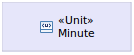 | A standard unit |
| Interface |  |
Describes an interaction point |
| Package |  |
Logical group of elements |
| ConstraintBlock | 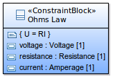 | A composite constraint entity used in parametric equations |
The user can also delete an element (see Diagram editor/Editor tab-bar/Delete element/from model).
Manage block features
It is possible to create a feature by selecting the creation tools from the palette and then clicking on the diagram or an element.
The following creation tools exist in the palette :
| Element | Representation | Comments |
|---|---|---|
| Function |  |
Function available on a block |
| Property | |
Property of a block |
| Typed Property | |
Property with a selected type |
| Dimension | |
Specify a dimension for a value type |
| Unit | |
Specify a unit for a value type |
| Literal | |
Add a value to an enumeration |
The typed property tool opens a wizard to select an existing type for the newly created property.
The user can also delete a feature (see Diagram editor/Editor tab-bar/Delete element/from model).
Manage block relationships
It is possible to create a relationship by selecting the edge creation tool from the palette and then clicking on a source element and a target element.
The following edge creation tools exist in the palette :
| Element | Representation | Comments |
|---|---|---|
| Link a Block to an Actor |  |
Selects a user that interacts with the system |
| Association |  |
Connection between blocks and parts |
| Composition |  |
Defines hierarchy between block entities |
| Aggregation |  |
Aggregation between blocks |
| Generalization | 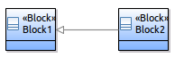 | Describes an element as a specialized descendant of another |
| Interface Realization | 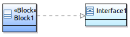 | Realizes functions of an interaction point |
| Dependency |  |
Relationship that traces the dependence of entities |
| Usage |  |
Source entities uses target entities |
The user can also delete a relationship (see Diagram editor/Editor tab-bar/Delete element/from model).
And finally, he can reconnect relationships. It is possible to reconnect the source and the target of any kind of edge in the block definition diagram :
- link an actor to a block
- association
- composition
- aggregation
- generalization
- interface realization
- dependency
- usage
Manage existing block elements
As the diagram is unsynchronized, the user needs to add manually the elements already existing in the semantic model that should appear on the representation.
It is possible to add existing elements by :
- selecting the add tool from the palette or the tooltip and then clicking on the diagram or an element. The add tool opens a selection wizard.
- drag and droping an element from the model explorer.
The following elements can be added on a block definition diagram :
- block
- constraint block
- package
- interface
- actor
- data type
- primitive type
- enumeration
- unit
- dimension
- value type
The user can see that an element is not coming from the current package :
- the element border is lighter than the element border of elements defined in the current package
- a tooltip shows the container package of the element if the element is not contained by the current package
And finally, he can remove an existing element from a diagram. In this case the element is only deleted from the representation but it is not removed from the UML model. This Remove tool exists in the Existing elements section in the palette (see Diagram editor/Editor tab-bar/Delete element/from model).
Add block related element
The user can activate a layer which shows the requirements satisfied by visible blocks.
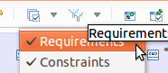
This traceability view is not part of the SysML standard. A requirement container list all the requirements satisfied by a block :

In the block definition diagram a contextual action is available to show on the diagram the element related to the selection.
The add related elements action is available from :
- a requirement, a block, a value type, an interface, a package, a constraint block, a dimension, a unit : shows all the elements that define a relationship (dependency, composition…) with the selected element
- a block definition diagram : shows all the elements contained in the package associated to the diagram.
Edit block labels
In the block definition diagram, it is possible to edit the elements labels(Diagram editor/Editor main graphical area/Direct Edit). This actions allows to edit :
- requirement, block, unit, value type, interface, dimension, package labels
- relationships labels
Define the internal system structure
Next step for Alfred is to detail the internal structure of its system. He uses the Internal Block Definition diagram for this.

The internal block definition diagram is an unsynchronized diagram which means that the user has to add existing elements manually on the diagram to see them.
Manage internal blocks
It is possible to create parts and ports by selecting the creation tools from the palette and then clicking on the diagram or an element.
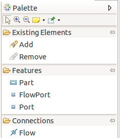
A diagram is associated to a package and when the user click on the diagram background the element is created under the corresponding package in the UML model.
If the user selects a container, the element will be created under the corresponding semantic element in the UML model.
Tooltip tools are also available to create any kind of elements.
Creation tools are available in the requirement diagram for the following types :
| Element | Representation | Comments |
|---|---|---|
| Part |  |
Decompose a block subsystem using instances of blocks |
| Flow port |  |
Input/output flows of a block |
| Port | 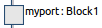 | Interaction point to connect block |
The user can also delete an element (see Diagram editor/Editor tab-bar/Delete element/from model).
Manage internal block flows
It is possible to create a flow by selecting the edge creation tool from the palette and then clicking on a source element and a target element.
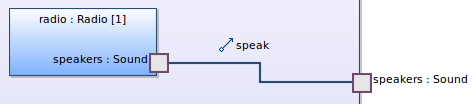
The user can also delete a flow (see Diagram editor/Editor tab-bar/Delete element/from model).
And finally, he can reconnect flows. It is possible to reconnect the source and the target of any flow in the internal block definition diagram.
Manage existing internal block elements
As the diagram is unsynchronized, the user needs to add manually the elements already existing in the semantic model that should appear on the representation.
It is possible to add existing elements by :
- selecting the add tool from the palette or the tooltip and then clicking on the diagram or an element. The add tool opens a selection wizard.
- drag and droping an element from the model explorer.
The following elements can be added on an internal block definition diagram :
- part
The user can see that an element is not coming from the current package :
- the element border is lighter than the element border of elements defined in the current package
- a tooltip shows the container package of the element if the element is not contained by the current package
And finally, he can remove an existing element from a diagram. In this case the element is only deleted from the representation but it is not removed from the UML model. This Remove tool exists in the Existing elements section in the palette (see Diagram editor/Editor tab-bar/Delete element/from model).
Add internal block related element
In the internal block definition diagram a contextual action is available to show on the diagram the element related to the selection.
The add related elements action is available from :
- a port, a part : shows all the elements that define a relationship (dependency, composition…) with the selected element
- an internal block definition diagram : shows all the elements contained in the package associated to the diagram.
Edit internal block labels
In the internal block definition diagram, it is possible to edit the elements labels (see Diagram editor/Editor main graphical area/Direct edit). This actions allows to edit :
- part, ports, flow ports labels
- flows labels
Capture performance and quantitative constraints
Final step for Alfred, he has to precisely define performance and quantitative constraints for its system. The standard way for this is to use the Parametric diagram. Parametric diagrams show mathematical relationships among the system blocks. They are created using constraint blocks that define mathematical formulas.

Manage constraint blocks
It is possible to create constraint blocks that describe the function of a constraint.
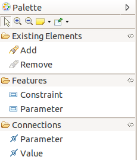
A diagram is associated to a package and when the user click on the diagram background the element is created under the corresponding package in the UML model.
If the user selects a container, the element will be created under the corresponding semantic element in the UML model.
Tooltip tools are also available to create any kind of elements.
Creation tools are available in the requirement diagram for the following types :
| Element | Representation | Comments |
|---|---|---|
| Constraint |  |
Opens a wizard to select an existing constraint block |
| Parameter |  |
Opens a wizard to select an existing value type |
The user can also delete a constraint or a parameter (see Diagram editor/Editor tab-bar/Delete element/from model).
Manage constraint block connections
It is possible to create a connections by selecting the edge creation tool from the palette and then clicking on a source element and a target element.
The following edge creation tools exist in the palette :
| Element | Representation | Comments |
|---|---|---|
| Parameter |  |
Connect parameters with same type |
| Value |  |
Connect an imported value type to a parameter |
The user can also delete a connection (see Diagram editor/Editor tab-bar/Delete element/from model).
And finally, he can reconnect connections. It is possible to reconnect the source and the target of any kind of edge in the block definition diagram :
- parameter
- value
Manage existing constraint block elements
As the diagram is unsynchronized, the user needs to add manually the elements already existing in the semantic model that should appear on the representation.
It is possible to add existing elements by :
- selecting the add tool from the palette or the tooltip and then clicking on the diagram or an element. The add tool opens a selection wizard.
- drag and droping an element from the model explorer.
The following elements can be added on a block definition diagram :
- constraint block
- value type
And finally, he can remove an existing element from a diagram. In this case the element is only deleted from the representation but it is not removed from the UML model. This Remove tool exists in the Existing elements section in the palette (see Diagram editor/Editor tab-bar/Delete element/from model).
Add constraint block related element
In the parametric diagram a contextual action is available to show on the diagram the element related to the selection.
The add related elements action is available from :
- a parameter, a constraint block : shows all the elements that define a relationship (dependency, composition…) with the selected element
- a parametric diagram : shows all the elements contained in the package associated to the diagram.
Edit constraint block labels
In the parametric diagram, it is possible to edit the elements labels (see Diagram editor/Editor main graphical area /Direct Edit). This actions allows to edit :
- parameter, constraint block, value type labels
- connections labels
Allocate the system
SysML provides allocation tables that support requirements allocation, functional allocation and structural allocation.